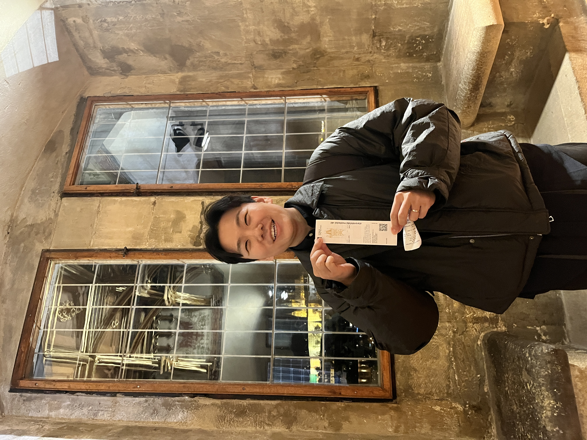

Sanghyun Kim
Email: sanghkim@kasi.re.kr
Welcome to Sanghyun Kim's homepage! I am an observational astrophysicist and a postdoctoral researcher at the Korea Astronomy and Space Science Institute (KASI). My research focuses on understanding the extreme conditions surrounding supermassive black holes (SMBHs) through multi-messenger observations of relativistic jets in blazars. To this end, I utilize high-angular-resolution Very Long Baseline Interferometry (VLBI). I also make use of multi-messenger data from various observatories, including the Fermi Gamma-ray Space Telescope and the IceCube Neutrino Observatory.
Research
I am interested in the multi-messenger astrophysics of radio to neutrino emission processes within blazar jets. Specifically, my research interests include VLBI imaging, pipeline development for data calibration, and jet kinematics, as well as light curve and variability analysis of blazars.
My research projects include:
- The Neutrino-Blazar Connection
- The Origin of Gamma-ray Emission in Relativistic Jets of Blazars
- Radio Flares in the Relativistic Jets of Blazars
To be updated soon.
Publications
First Author Papers
- Kim, S., et al. 2026, Multimessenger Study of Neutrino-Candidate Blazar PKS 0735+178 with the Korean VLBI Network, ApJ, in prep.
- Kim, S., Lee, S.-S., Algaba, J. C., et al. 2025, Gamma-ray flares from the jet of the blazar CTA 102 in 2016–2018, A&A, 694, A291
- Kim, S.-H., Lee, S.-S., Lee, J. W., et al. 2022, Magnetic field strengths of the synchrotron self-absorption region in the jet of CTA 102 during radio flares, MNRAS, 510, 815
Co-Author Papers
To be updated soon.
Full list: NASA ADS / Google Scholar
CV
My curriculum vitae (CV) is available here: Download CV (PDF)
About me
Employment
- Postdoctoral Researcher, Korea Astronomy and Space Science Institute, Republic of Korea | 2025-present
- Full-time Student Researcher, Korea Astronomy and Space Science Institute, Republic of Korea | 2018-2025
Education
Grants and Awards
International Collaborations and Memberships
Radio Observation Experience
Contact
Email: sanghkim at kasi.re.kr / sanghkim.astro at gmail.com
Affiliation: Korea Astronomy and Space Science Institute (KASI)
Office / Address: Jang Yeong-sil Hall Room 215 / 776 Daedeok-daero, Yuseong-gu, Daejeon 34055, Republic of Korea